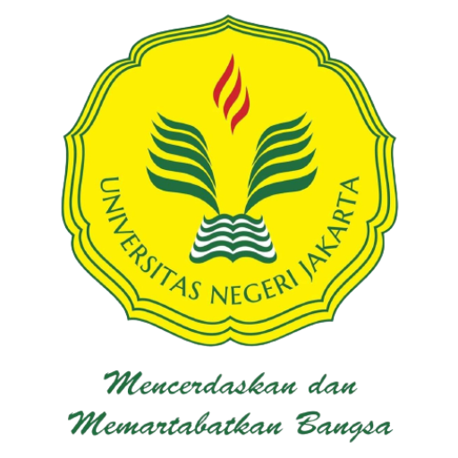

My Portofolio
State University of Jakarta
1. Historical of UNJ
Universitas Negeri Jakarta (UNJ) didirikan pada tahun 1964 dan merupakan salah satu perguruan tinggi negeri di Indonesia. Awalnya dikenal sebagai IKIP (Institut Keguruan Ilmu Pendidikan), kemudian pada tahun 1999 berubah nama menjadi UNJ. UNJ telah mengalami perkembangan pesat dan membuka fakultas non-pendidikan seiring berjalannya waktu.
2. Akreditasi
Sebagai salah satu perguruan tinggi terkemuka di Indonesia, UNJ telah memperoleh akreditasi yang tinggi dari Badan Akreditasi Nasional Perguruan Tinggi (BAN-PT). Akreditasi ini menunjukkan bahwa UNJ memenuhi standar pendidikan yang ditetapkan oleh pemerintah dan memiliki kualitas pengajaran yang baik. Selain itu, UNJ juga telah menjalin kerjasama dengan berbagai institusi pendidikan dan industri di dalam dan luar negeri. Kerjasama ini memungkinkan mahasiswa UNJ untuk mendapatkan pengalaman belajar yang lebih luas dan meningkatkan kualitas pendidikan yang diberikan.
3. Prestasi
Sebagai universitas yang berfokus pada pendidikan dan pengembangan sumber daya manusia, UNJ telah meraih berbagai prestasi dalam bidang akademik dan non-akademik. Beberapa prestasi yang telah diraih oleh UNJ antara lain: Penghargaan sebagai Perguruan Tinggi Berpredikat Unggul (PTBU) dari Kementerian Riset, Teknologi, dan Pendidikan Tinggi Republik Indonesia. Peringkat ke-4 dalam kategori Perguruan Tinggi Negeri Terbaik versi Webometrics Ranking of World Universities. Penghargaan sebagai Perguruan Tinggi Berwawasan Lingkungan dari Kementerian Lingkungan Hidup dan Kehutanan Republik Indonesia. Penghargaan sebagai Perguruan Tinggi Berintegritas dari Komisi Pemberantasan Korupsi Republik Indonesia. Prestasi-prestasi ini merupakan bukti nyata dari komitmen UNJ dalam memberikan pendidikan berkualitas dan menghasilkan lulusan yang siap menghadapi tantangan dunia kerja. Dengan sejarah yang panjang, lokasi kampus yang strategis, akreditasi yang tinggi, dan prestasi-prestasi yang gemilang, Universitas Negeri Jakarta (UNJ) telah membuktikan dirinya sebagai salah satu perguruan tinggi terbaik di Indonesia. Dengan fokus pada pendidikan dan pengembangan sumber daya manusia, UNJ terus berupaya memberikan pendidikan berkualitas dan menghasilkan lulusan yang siap bersaing di dunia kerja..
Sejarah Rektor IKIP - UNJ
FKIP Universitas Indonesia
Prof. Dr. R. Soegarda Poerbakawatja, Dekan FKIP Universitas Indonesia (1961 - 1963)
Prof. Dr. R. Slamet Iman Santoso, Dekan FKIP Universitas Indonesia (1963 - 1964)
IKIP - Jakarta
Brigjen A. Latief Hendraningrat, Rektor IKIP Jakarta (1964 - 1965)
Prof. Dr. Maftuchah Yusuf, Ketua Presidium IKIP Jakarta (1966 - 1967)
Prof. Dr. Deliar Noer, M.A., Rektor IKIP Jakarta (1967 - 1971; 1971 - 1975)
Dr. Siswojo Hardjodipuro, Pjs. Rektor IKIP Jakarta (1975)
Prof. Dr. H. Winarno Surakhmad, M.Sc., Ed., Rektor IKIP Jakarta (1975 - 1980)
Prof. Dr. R. Sudjiran Resosudarmo, M.A., Rektor IKIP Jakarta (1980 - 1984)
Prof. Dr. Conny R. Semiawan, Rektor IKIP Jakarta (1984 - 1988; 1988 - 1992)
Prof. Dr. A. Suhaenah Suparno, Rektor IKIP Jakarta (1992 - 1996)
Prof. Dr. Sutjipto, Rektor IKIP Jakarta (1997 - 1999)
Universitas Negeri Jakarta
Prof. Dr. Sutjipto, Rektor Universitas Negeri Jakarta (1999 - 2001; 2001 - 2005)
Prof. Dr. Bedjo Sujanto, M.Pd., Rektor Universitas Negeri Jakarta (2005 - 2009; 2009 - 2014)
Prof. Dr. H. Djaali, Rektor Universitas Negeri Jakarta (2014 - 2017)
Prof. Intan Ahmad, Ph.D., Plt. Rektor Universitas Negeri Jakarta (2017 - 2019)
Prof. Dr. Komarudin, M.Si., Rektor Universitas Negeri Jakarta (2019 - 2023; 2023 - 2027)[5][6]
Sejarah Rektor IKIP - UNJ
FKIP Universitas Indonesia
Prof. Dr. R. Soegarda Poerbakawatja, Dekan FKIP Universitas Indonesia (1961 - 1963)
Prof. Dr. R. Slamet Iman Santoso, Dekan FKIP Universitas Indonesia (1963 - 1964)
IKIP - Jakarta
Brigjen A. Latief Hendraningrat, Rektor IKIP Jakarta (1964 - 1965)
Prof. Dr. Maftuchah Yusuf, Ketua Presidium IKIP Jakarta (1966 - 1967)
Prof. Dr. Deliar Noer, M.A., Rektor IKIP Jakarta (1967 - 1971; 1971 - 1975)
Dr. Siswojo Hardjodipuro, Pjs. Rektor IKIP Jakarta (1975)
Prof. Dr. H. Winarno Surakhmad, M.Sc., Ed., Rektor IKIP Jakarta (1975 - 1980)
Prof. Dr. R. Sudjiran Resosudarmo, M.A., Rektor IKIP Jakarta (1980 - 1984)
Prof. Dr. Conny R. Semiawan, Rektor IKIP Jakarta (1984 - 1988; 1988 - 1992)
Prof. Dr. A. Suhaenah Suparno, Rektor IKIP Jakarta (1992 - 1996)
Prof. Dr. Sutjipto, Rektor IKIP Jakarta (1997 - 1999)
Universitas Negeri Jakarta
Prof. Dr. Sutjipto, Rektor Universitas Negeri Jakarta (1999 - 2001; 2001 - 2005)
Prof. Dr. Bedjo Sujanto, M.Pd., Rektor Universitas Negeri Jakarta (2005 - 2009; 2009 - 2014)
Prof. Dr. H. Djaali, Rektor Universitas Negeri Jakarta (2014 - 2017)
Prof. Intan Ahmad, Ph.D., Plt. Rektor Universitas Negeri Jakarta (2017 - 2019)
Prof. Dr. Komarudin, M.Si., Rektor Universitas Negeri Jakarta (2019 - 2023; 2023 - 2027)[5][6]